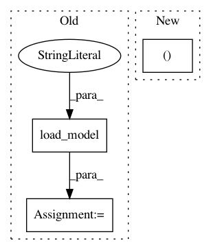

d03644cb2140ea0c92f2360407d26a23f6e68c54,art/detection/features_unittest.py,TestFeatures,test_attention_map,#TestFeatures#,130
Before Change
nb_classes = 10
// compute the attention map using only Keras
model = load_model("./tests/model.h5")
STRIDES = 4
WINDOW_WIDTH = 8
After Change
In pattern: SUPERPATTERN
Frequency: 3
Non-data size: 3
Instances
Project Name: IBM/adversarial-robustness-toolbox
Commit Name: d03644cb2140ea0c92f2360407d26a23f6e68c54
Time: 2018-11-29
Author: ambrish.rawat@ie.ibm.com
File Name: art/detection/features_unittest.py
Class Name: TestFeatures
Method Name: test_attention_map
Project Name: IBM/adversarial-robustness-toolbox
Commit Name: d03644cb2140ea0c92f2360407d26a23f6e68c54
Time: 2018-11-29
Author: ambrish.rawat@ie.ibm.com
File Name: art/detection/features_unittest.py
Class Name: TestFeatures
Method Name: test_mean_class_dist_fv
Project Name: IBM/adversarial-robustness-toolbox
Commit Name: d03644cb2140ea0c92f2360407d26a23f6e68c54
Time: 2018-11-29
Author: ambrish.rawat@ie.ibm.com
File Name: art/detection/features_unittest.py
Class Name: TestFeatures
Method Name: test_saliency_map